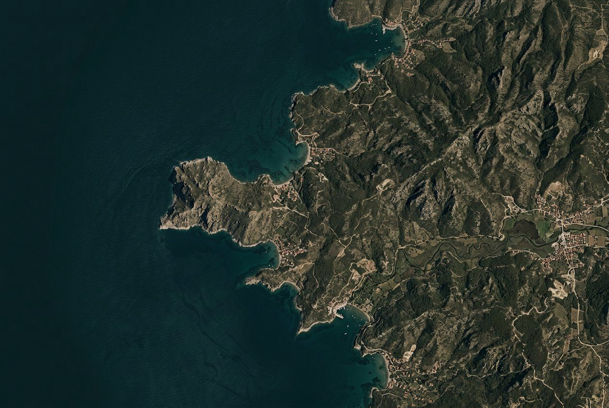

Masaüstü · 06 Rota planlayıcı
Açıklanabilir rota: her durak gerekçeli.
Süre, tempo ve ulaşım sol panelde seçilir; sonuç haritada numaralı duraklar ve yükseklik profiliyle görünür. Kaydetmeden önce onay adımı korunur.

1
2
3
4
5
6
09:00 – 09:22 · 22 dk
Celsus Kütüphanesi 1.284 değerlendirme · içeri girRota çizimi temsilidir